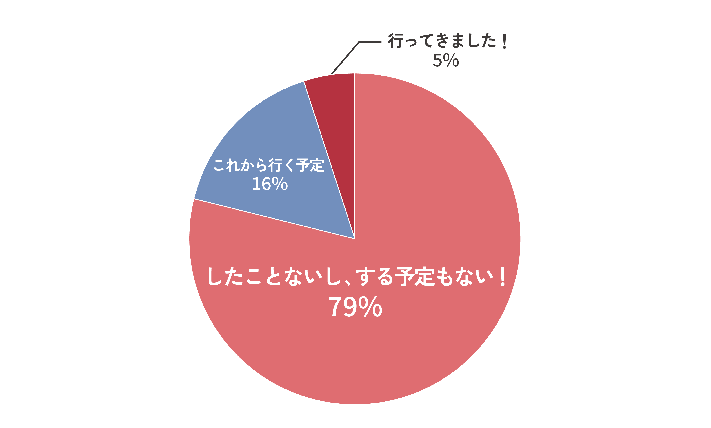

Top
早稲田祭とは
運営スタッフとは
運スタの1年
局紹介
運スタのリアル
運スタ写真館
新歓イベント
入会方法
よくある質問お問い合わせ
運スタのリアル
運スタのリアル
アンケート
男女比は？
みんなで仲良く活動しています！
学部はどこ？
西早稲田キャンパスや所沢キャンパスの人もいます！みなさんの入会をお待ちしております！
出身地はどこ？
やはり関東出身の人が多いですが、地方出身の人もいます！
通学時間はどのくらい？
遠くから通っている人もたくさんいます！
兼サーはしているの？
兼サー先はスポーツ系、パフォーマンス系が多い印象です！
アルバイトはしているの？
アルバイトとの両立もできます！
留学経験・予定はある？

留学予定の運スタもいます！
代表インタビュー 佐俣竣介
Q1. 早稲田祭にかける熱い想いを教えてください！
A1. 早稲田祭って本当にすごい...
A1. 早稲田祭って本当にすごいんです。日本最大級の学園祭と表現されることも多いですが、私は「私たちが創っているものは日本一の学園祭である」と、胸を張って言えます。それくらい自分は、早稲田祭の運営に携われていることを誇りに思っていますし、早稲田祭が大好きです。早大生を中心にこれだけ多くの人が、運営している私たちまでもが熱くなってしまうほどの熱量をぶつける場所って、他にないと思います。「自分の大学生活の全てを捧げてもいい」って思えるくらい、本当に早稲田祭が大好きです。
Q2. なぜ運スタに入会したんですか？
A2. 正直に言うと「友達をつく...
A2. 正直に言うと「友達をつくりたかったから」です。「友達つくりたい！」「とりあえず大きいサークルに入ろう！」っていうよくある考えでしたね。だから入会したときは、早稲田祭のことは正直何も知らなかったし、ここまで運スタが大好きになるとは思っていませんでした。
Q3. 運スタの活動のやりがいを教えてください！
A3. 運スタの活動って本当に多...
A3. 運スタの活動って本当に多種多様だから、人によってかなり違うかもしれません！ 運スタ全体に共通して言えるのは、必ず「誰か」・「何か」のための活動になっている、ということですかね。早稲田祭に参加してくれる人たちのため、来場者のためっていうのはイメージしやすいところですが、自分以外の運スタのためとか、もっと言えば早稲田祭全体のためとか、社会のためとか！ 日々、自分のしていることが「誰か」・「何か」のためになっていると実感できる活動が運スタにはたくさんあります。本当にやりがいのある活動ばかりです。
Q4. これから入会を考えている人にメッセージをお願いします！
A4. 今の時点で早稲田祭に関わ...
A4. 今の時点で早稲田祭に関わりたいっていう強い想いを持っている人はもちろん、やりたいことが決まっていないよって人もぜひ運スタに！ 運スタにはいろいろな仕事があって、その一つひとつがやりがいに満ちたものばかりです。大学生活でまだやりたいことが決まってなくてもきっと大丈夫！ ぜひ運スタに飛び込んできてください。自分がそうであったように、運スタに入ってからやりたいことも絶対に見つかるし、きっと早稲田祭のことも大好きになります。たくさんの仲間たちと共に、みなさんのことをお待ちしています！ 運スタで会いましょう！
チームインタビュー
運スタ内のいろいろなチームにインタビューしました！ 活動内容や運スタに入った理由などを詳しく聞いています！
インタビューに答えてくれたチーム
会場整備局 環境チーム 参加対応局 飲食物販売企画チーム 開発局 来場者体験開発チーム 企画局 パレードチーム
広報制作局 Webチーム 渉外局 地域チーム 総務局 人的資源管理チーム 財務局 ※財務局にはチームがありません
Q1. チームの活動内容を教えてください！
環境チーム......
環境チーム
環境チームは早稲田祭のキレイを守るチームです！ 準備期間には特設ごみ箱（エコステーション）の制作や、飲食屋台で使用するエコ容器の利用促進などをします。当日は早稲田祭で出るごみを回収するためにキャンパス内を駆け巡るため、自分たちが早稲田祭を支えているということを肌で感じることができます！
飲食物販売企画チーム......
飲食物販売企画チーム
早稲田祭では、運動系サークルをはじめ、さまざまなサークルが飲食屋台を出店します。私たちは、保健所や消防署との調整を通じて、参加団体が安全な環境で食品を提供できるようサポートしています！
来場者体験開発チーム......
来場者体験開発チーム
来場者の「体験」に関わる全てを開発することができるチームです。全ての来場者が楽しむことのできる早稲田祭を創るために、さまざまな企画を行ったり、他部署と一緒に問題解決を図ったりしています！ 祭の規模だけでなく、質にもこだわる早稲田祭ならではのチームだと思います！
パレードチーム......
パレードチーム
私たちのチームは、戸山キャンパスをスタート地点、早稲田キャンパス近くの大隈講堂前にあるステージをゴールとして、出演者が公道を練り歩く「PARADE企画」の立案・運営を行います。大規模であるからこそ危険を伴う企画でもあるため、安全面を考えながら警察や大学との調整を行います！ 見てくださる全ての方に感動を与えるために活動しています！
Webチーム......
Webチーム
早稲田祭の公式サイトをはじめとして、今みなさんが見てくれているこの新歓公式サイトなどのWebサイトを作っています。Webチームに入ったら、まずはサイト制作の根幹であるプログラミングを一から学ぶので、未経験の人でも大丈夫です！ この新歓公式サイトもみなさんが見やすいようにWebチーム一同デザインを考え、コーディングも自分たちで行いました！
地域チーム......
地域チーム
早稲田祭は、早稲田のまちとの結び付きがとても強い祭です。地域チームは地域の方々と最前線で関わり、信頼関係を構築することで、早稲田のまちと運スタとの架け橋となっています！ さまざまな地域イベントに参加したり、地域おそうじを行ったりすることで、地域の方々に日頃の感謝の気持ちを伝えています！
人的資源管理チーム......
人的資源管理チーム
約650人を誇る運スタ全員の早稲田祭当日のシフトを作ります！ 分量が多く大変な作業ですが、シフトが完成したときの達成感は格別です！ また、運スタ全員が参加できるレクリエーションの企画・運営も行っています。運スタのみんなが日頃の活動を頑張る原動力となれるようなレクリエーションを目指しています！
財務局......
財務局
財務局は唯一チームが存在しない局で、局単位で活動しています。私たちは運スタが早稲田祭を創りあげるための会計活動を、責任を持って取りまとめています！ 会計を通して全ての部署の活動に目を通すため、みんなの活動を知ることができ、とても興味深いです！
Q2. チームの忙しさを教えてください！
環境チーム......
環境チーム
環境チームは早稲田祭に近づくにつれて忙しくなります！ 早稲田祭直前から当日・撤収日にかけての忙しさは全チームの中でもトップレベルかもしれません。しかし言い換えれば、早稲田祭で最も輝けるチームの1つであるということです。大変なこともありますが、チームみんなで助け合っているため、当日まで活動を充実させるを送ることができます！
飲食物販売企画チーム......
飲食物販売企画チーム
10月までは資料作成が主ですが、祭直前になると、飲食屋台を出す団体の屋台の塗装や組み立てをサポートしたり、当日、必要になる備品を準備したりするなど、実務が多くなります。大変な部分もありますが、チーム員と一緒に頑張れるのですごく充実しています！！
来場者体験開発チーム......
来場者体験開発チーム
1年を通してバランスよく忙しいチームです！ 時期に応じてやることはさまざまなので、特定の時期に仕事が山積みになる......ということはありません。自分で考えた企画を早稲田祭で実現するために、おのおの考えながら活動するので、忙しさを自分で調整しやすいチームだと思います！
地域チーム......
地域チーム
地域チームは、1年を通して忙しさが安定しています！ 一つひとつの小さな活動が地域の方々との信頼関係の構築に繋がるので、日々の積み重ねをとても大切にしています。早稲田祭直前も比較的余裕のあるスケジュールなので、運スタ以外のことともしっかり両立して、無理なく楽しい運スタライフを送ることができます！
財務局......
財務局
特に予算総会の前は多くの部署の予算審議を行うため忙しくなりますが、局員全員で分担してれぞれが自分の担当部署を専門的に見て予算をつくるため、私生活やその他の活動とも両立できますよ！
Q3. なぜ運スタに入会したんですか？
飲食物販売企画チーム......
飲食物販売企画チーム
さまざまな人と関わる機会を得られると感じたからです。多種多様な団体や人と関わることができ、純粋に「楽しそう！」と思ったのと、「自分の視野がすごく広がりそうだな」と感じ、入会しました！ 運スタ自体の人数も多いため、運スタ内でもさまざまな人と関わることができ、すごく充実してるなと感じます！
パレードチーム......
パレードチーム
中高生の頃、私は文化祭や体育祭に参加して楽しむタイプで、イベントの運営を行う「楽しませる」側に回ることはありませんでした。しかし、新歓で運スタに出会い、説明を聞くうちに、祭を運営して内側から「楽しませる」人たちの活発な様子を知ることができ、自分もその達成感を味わってみたいと思い、入会しました！
Webチーム......
Webチーム
最初はなんとなく「早稲田の3大サークルに入りたいな」と思っていたのですが、運スタは3大サークルの中でも活動内容が多岐に渡っていたのがとても魅力的でした！ サークルでは何か出版や広報関係に携わりたいなと思っていたので、やりたいことにばっちり当てはまる広報制作局が運スタにあることから、入会を決意しました！
地域チーム......
地域チーム
「はっぴの背中に憧れた」からです！ 私は高校の時に初めて早稲田祭に足を運びました。その時、「祭」と大きく書かれたえんじのはっぴを着た運スタに出会い、心を打たれました。どの運スタの方々もキラキラとした笑顔で、仲間と楽しそうに祭を動かしていて、その瞬間、「私も祭の運営に携わりたい」と、強く思いました。運スタへの入会は大学入学前から憧れていたことの1つでした！
人的資源管理チーム......
人的資源管理チーム
早稲田大学という、いわば「なんでもできる環境」に身を置いたからには、ただ遊んで4年間を過ごすのではなく、何か大きなことに携わって将来につなげたいと思ったからです！
Q4. 今までの運スタの活動の中で1番印象に残っていることを教えてください。
環境チーム......
環境チーム
早稲田祭が終わった次の日の朝、5時に集合したことです！ まだ周りが暗い午前5時の大学で、業者の方にごみを回収してもらいました！ ごみ置き場にごみがなくなった時の達成感と、早稲田祭が終わってしまったのだという寂しさは忘れられません！
パレードチーム......
パレードチーム
早稲田祭当日！と言いたいところですが、実はパレード企画の直前リハーサルです。出演団体・出演者のみなさんが「よしやるぞ！」という勢いでパフォーマンスをしてくださったのを見て、「この人たちが輝ける最高のパレードを作らなければ！」という高揚感に包まれて当日を迎えることができました。
Webチーム......
Webチーム
夏休みに行った広報制作局の合宿が一番印象に残っています。普段はチーム単位でおのおのタスクを行っていくので、他チームと関わる機会は少ないのですが、局合宿は局全体でのレクリエーションなので交友関係がとても広がりましたし、海で遊んだり花火をしたり、「The 大学生」という感じでとても楽しかったです！
人的資源管理チーム......
人的資源管理チーム
やはり早稲田祭当日の景色です！ いつも通っている大学が、ステージや装飾物で彩られて非日常的な空間になり、そこにたくさんの来場者の方が訪れていたあの景色はとても印象に残っています！ また、多くの人であふれている中でも、えんじのはっぴを着た運スタは一段と輝いていました！ 早稲田祭2023で見た景色をもう1度見たいと強く思っているからこそ、早稲田祭2024に向けた日頃の活動を頑張ることができています！
財務局......
財務局
早稲田祭前のいよいよ本番を迎える緊張感や高揚感、そしてそれを運スタのみんなと共にする感覚は、言語化しがたい不思議な感覚だったなと思います。早稲田祭の直前は、祭以外のことが頭から抜け、運スタの想いが1つになるという、今までに無い経験を味わうことができました！
Q5. これから入会を考えている人にメッセージをお願いします！
環境チーム......
環境チーム
運スタには同じ目標に向かって頑張る人がたくさんいます！ 似た価値観を持つ友達や、安心できる自分の居場所も見つかるはずです！ 入学したばかりで不安なことが多いと思いますが、そのような時は心のコンパスに従ってくださいね！ みなさんと早稲田祭を迎えられることを楽しみにしています！
来場者体験開発チーム......
来場者体験開発チーム
自分なりの温度感でいろいろな角度から早稲田祭に向き合えるのが運スタの魅力だと思います！ ただ友達をつくるだけでも、きっと運スタでの日々は楽しいはず。もちろん祭に全力で向き合いたい人にも最高の居場所になると思います！ どんな人でも運スタは大歓迎です。みなさんと会える日を楽しみにしています！
Webチーム......
Webチーム
運スタは本当に大きいサークルです。やりたいことが明確な人はもちろん、やりたいことが決まっていない人も、運スタに入ってしまえばおのずと自分のやりたいことが見つけられます！ 例年約20万人も訪れる早稲田祭を一緒に魅せませんか？ 運スタであなたを待っています～！！
地域チーム......
地域チーム
1つだけみなさんに伝えたいのは、たくさん悩んでほしいということです。私にとって運スタは大学生活そのものです。運スタを通して出会えた仲間、思い出は人生の宝物です。だからみなさんにもそんな人生の宝物に出会えるように、たくさん迷ってほしいと思います。その中の1つの選択肢として運スタがあれば嬉しい限りです！ 運スタはたくさんの仲間と祭の成功に向かって走っていくことができる最高のサークルです。運スタとして最高の大学生活が送れることは、約束します！ みなさんのこと、待ってます！！
人的資源管理チーム......
人的資源管理チーム
「日本最大級の学園祭」と聞いてわくわくしている人、やりがいのあることにチャレンジしたいと思っている人は、ぜひ入会フォームを出してみてください！ ここでしかできない経験が待っています！ みなさんと一緒に活動できるのを楽しみにしています！！